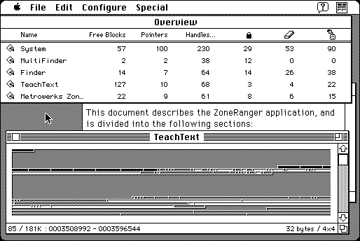

Download
ZoneRanger_1.1.zip (111K) Metrowerks ZoneRanger 1.1 repackaged into a zipped hfs disk image and checksum file. The disk image can be mounted with Mini vMac.
ZoneRanger_1.1.sit.hqx (152K) Metrowerks ZoneRanger 1.1 in the original format.
copyright: Metrowerks, Inc.
mod date: Jul 20, 1994
license: free for non-commercial use
Provides "detailed information about each heap zone", and "windows in which each zone can be displayed graphically", where you can "click on any invidual block to view its contents". And many other features. "requires System 7 or later".

If you find these downloads useful, please consider helping the Gryphel Project, which hosts them.
Here are the md5 checksums for the downloads, signed with Gryphel Key 5:
--------- GRY SIGNED TEXT --------- 2b3d3378939abe9bb8fe0463553b753c ZoneRanger_1.1.zip d5935374ede38a53a1eafba838b7ffe8 ZoneRanger_1.1.sit.hqx ------- BEGIN GRY SIGNATURE ------- Gry/4Xa8CFcUzxdN/BHtNBz21iZkpBA0Xg4GXko4tATIj0vuXVfxv8an5yUpTq8C KoHa0X2+99Kw9OVodzQICEKkTF8z1E+1ntK2Iql7RxN/11eQyFJlinyFnJhVJwDj CQFAcP14l3LzUxECfQJ4kciHNGauAV6nmhbVdKGlU70dNWzDen1QS9DEjpJnnROz -------- END GRY SIGNATURE --------